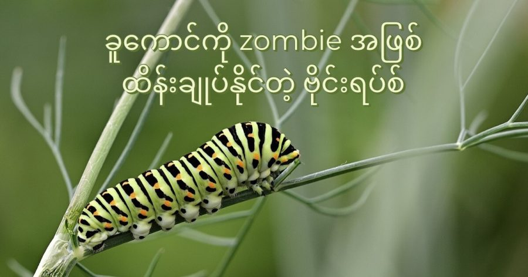

ခူကောင်တွေ အပါအဝင် အင်းဆက် ပိုးမွှားတွေကို ကူးဆက်ပြီး ဒီ အင်းဆက် ပိုးမွှားတွေကို ထိန်းချုပ်နိုင်တဲ့ zombie ဗိုင်းရပ်စ် တစ်မျိုး ရှိကြောင်း သိပ္ပံ ပညာရှင်တွေ သိရှိခဲ့တာ ကြာခဲ့ပါပြီ။
ဒီ ဗိုင်းရပ်စ် ဟာ အဓိက အားဖြင့် လိပ်ပြာတွေ ဖြစ်လာမယ့် ခူကောင်တွေကို အဓိက ကူးဆက်တာကို တွေ့ရှိရပါတယ်။ ဒီ ဗိုင်းရပ်စ် ကူးဆက် ခံရတဲ့ ခူကောင်တွေဟာ အပင်ရဲ့ အမြင့်ပိုင်း ဆီကို တရွေ့ရွေ့ တက်သွားရင်း အပင်ထိပ်ဖျားမှာ သေဆုံး သွားကြပါတယ်။
ခူကောင်တွေဟာ ပုံမှန်ဆို သစ်ပင် အမြင့်ပိုင်း တွေကို ရှောင်ရှား ကြပါတယ်။ ဘာကြောင့်လဲဆို အပင် အမြင့်ပိုင်းတွေမှာ သူတို့ကို ငှက်တွေက အလွယ်တကူ တွေ့မြင်ပြီး စားသောက်ခံရ နိုင်တာကြောင့်ပါ။
ဒါပေမယ့် ဒီ ဗိုင်းရပ်စ်တွေက ခူကောင်တွေကို ဘယ်လို နည်းလမ်းနဲ့ ထိန်းချုပ်ပြီး အပင်ရဲ့အ မြင့်ပိုင်းကို တက်အောင် ပြုလုပ်သလဲ ဆိုတာကိုတော့ ပညာရှင်တွေ အဖြေရှာလို့ မရခဲ့ ပါဘူး။
အခုနောက်ဆုံး သုတေသန စာတမ်း တစ်စောင်ရဲ့ တင်ပြချက် အရ ဒီဗိုင်းရပ်စ်တွေ ဘယ်လို နည်းလမ်းနဲ့ ခူကောင်တွေကို ထိန်းချုပ်သလဲဆိုတာနဲ့ ပါတ်သက်တဲ့ သဲလွန်စ အချို့ ရရှိ ခဲ့ပါတယ်။
မတ်လ ၈ ရက်နေ့က Molecular Ecology သုတေသန ဂျာနယ်မှာ တင်ပြထားတဲ့ သုတေသန စာတမ်းရဲ့ အဆိုအရ ဒီ ဗိုင်းရပ်စ် တွေဟာ ခူကောင်ရဲ့ အမြင်အာရုံနဲ့ ပါတ်သက်တဲ့ မျိုးရိုးဗီဇ ကို ပြောင်းလဲ ပစ်ခြင်း အားဖြင့် ခူကောင်တွေကို အပင်အမြင့်ပိုင်းကို တက်အောင် ဖန်တီးကြတယ်လို့ ဆိုပါတယ်။
အခု သုတေသန ပြုလုပ်ခဲ့တဲ့ ဗိုင်းရပ်စ်ဟာ baculovirus မျိုးစုဝင် ဗိုင်းရပ်စ် အမျိုးအစား ဖြစ်ပါတယ်။ ဒီ ဗိုင်းရပ်စ် မျိုးစုတွေဟာ သက်တမ်းအားဖြင့် နှစ်သန်း ၂၀၀ ကနေ သန်း ၃၀၀ လောက်ထိ ရှိတဲ့ ရှေးဟောင်း ဗိုင်းရပ်စ် တွေ ဖြစ်ကြပါတယ်။ ဒီဗိုင်းရပ်စ်တွေဟာ သူတို့ မျိုးပွားတဲ့ လက်ခံကောင် တွေနဲ့ အတူ ဆင့်ပွားဖြစ်စဉ် တစ်လျှောက် ဆင့်ကဲ ပြောင်းလဲ လာခဲ့ကြတယ်လို့ ယူဆကြပါတယ်။
ဒီ Baculoviruses တွေဟာ အင်းဆက်ပိုးမွှား အမျိုး ၈၀၀ ကျော်ကို ကူးဆက် နိုင်ပါတယ်။ ဒါပေမယ့် သူတို့ အဓိက တိုက်ခိုက်တဲ့ ပိုးမွှားတွေကတော့ ပိုးဖလံ နဲ့ လိပ်ပြာ တွေ ဖြစ်လာမယ့် ခူကောင်တွေကို အဓိက တိုက်ခိုက်ကြတာပါ။
ဒီ ရောဂါ ကူးဆက် ခံရတဲ့ ခူကောင်တွေဟာ “tree-top disease (သစ်ပင်ထိပ်ဖျား ရောဂါ)” လို့ ခေါ်တဲ့ ရောဂါ လက္ခဏာတွေ ပြလာပါတယ်။ ဒီ ရောဂါ ကူးဆက် ခံရတဲ့ ခူကောင်တွေဟာ အစာကို အဆက်မပြတ် စားသုံး ပါတော့တယ်။ ပြီးတော့ ဒီ ခူကောင်တွေဟာ သစ်ပင် အမြင့်ပိုင်းတွေကို တက်လာပြီး သေဆုံး သွားကြ ပါတယ်။
ဒီ tree-top disease နဲ့ ပါတ်သက်လို့ သိပ္ပံ ပညာရှင်တွေ သိရှိခဲ့ ကြတာ ရာစုနှစ် တစ်ခုလောက် ရှိပါပြီ။ ဒါပေမယ့် အခုထိတော့ ဘယ်လိုလုပ်ပြီး ဒီ ဗိုင်းရပ်စ်က ခူကောင်တွေကို ဘယ်လို ထိန်းချုပ်သလဲ ဆိုတာကိုတော့ စဉ်းစားလို့ မရခဲ့ ကြပါဘူး။
ယခင် သုတေသန တွေအရ ဒီ ဗိုင်းရပ်စ် ကူးခံရတဲ့ ခူကောင်တွေဟာ အလင်းရောင် ရဲ့ ဆွဲဆောင်ရာ နောက်ကို လိုက်ပါ တတ်တဲ့ လက္ခဏာ တွေ့ရှိ ရပါတယ်။ ဒီ အချက်ကို ဓါတ်ခွဲခန်း အတွင်း စမ်းသပ်မှု တွေအရလဲ သက်သေ ပြနိုင် ခဲ့ပါတယ်။
သုတေသီ တွေဟာ ဗိုင်းရပ်စ် ကူးခံရတဲ့ ခူကောင်နဲ့ အကူး မခံရတဲ့ ခူကောင်တွေကို ဓါတ်ခွဲခန်းထဲမှာ နှိုင်းယှဉ် ကြည့်ခဲ့ ကြပါတယ်။ ဒီ ခူကောင်တွေကို ပိုက်ကွန်တွေ ကြားထဲမှာ ထည့်ပြီး အပေါ်ကနေ အလင်းရောင် ပေးထား ခဲ့ပါတယ်။
ဒီအခါ ရောဂါ အကူးမခံရတဲ့ ခူကောင်တွေက ပိုက်ကွန် တစ်လျှောက် အပေါ်တက်လိုက် အောက်ဆင်းလိုက် လုပ်နေပြီး ပိုးအိမ် မဖွဲ့မီ အောက်ခြေကို အားလုံး ပြန်ဆင်းကြတာ တွေ့ကြရ ပါတယ်။
ဗိုင်းရပ်စ် ကူးခံထားရတဲ့ ခူကောင်တွေ ကတော့ ပိုက်ကွန်ရဲ့ အပေါ်ပိုင်းကိုပဲ ဆက်တိုက် တက်ဖို့ ကြိုးစားနေ ခဲ့တာကို တွေ့ရပါတယ်။ ဒီလို အပေါ်ကို တက်ဖို့ ကြိုးစားရင်း ပိုက်ကွန်ရဲ့ ထိပ်ပိုင်းမှာ သေဆုံးကုန် ကြပါတယ်။
ပိုး ကူးဆက်ခံရတဲ့ ခူကောင်တွေဟာ အပေါ်က အလင်းရောင် ပေးတဲ့ မီးသီးရဲ့ အမြင့် မြင့်လေလေ အပေါ်ကို ပိုပြီး မြင့်မြင့် တွယ်တက်လေလေ ဆိုတာလဲ တွေ့ကြရ ပါတယ်။
ဒီလို အပေါ် တက်တာဟာ အလင်းရောင်ကြောင့် မဟုတ်ပဲ မြေဆွဲအားနဲ့ ဆန့်ကျင်ဖက်ကို တက်တာ ရော မဖြစ်နိုင်ဘူးလား။
ဒီ အချက်ကို သိဖို့ ပိုက်ကွန်တွေကို ရေပြင်ညီ အတိုင်း ထားပြီး ထပ်မံ စမ်းကြည့်ခဲ့ ကြပါတယ်။ ဒီ အခါမှာလဲ ပိုးကူး ခံရတဲ့ ခူကောင်တွေဟာ အလင်းရောင် ရှိရာ ဆီပဲ ရွှေ့လာ ကြတာကို တွေ့ကြရ ပါတယ်။
နောက် တဆင့် အနေနဲ့ ရောဂါ ပိုးကူး ခံရတဲ့ ခူကောင်တွေရဲ့ မျက်လုံးတွေကို ခွဲစိတ်ပြီး ထုတ်ပစ်ခဲ့ ကြပါတယ်။ ဒီအခါ မှာတော့ ဒီ ခူကောင်တွေဟာ အလင်း ရှိရာကို ရောက်အောင် မလာနိုင် ကြတော့ဘူး ဆိုတာ တွေ့လာရပါတယ်။
ဒီအချက်က ဘာကို ပြနေလဲ ဆိုတော့ ဒီ ဗိုင်းရပ်စ် တွေဟာ ခူကောင်တွေရဲ့ မျက်လုံး အမြင်အာရုံ ကနေတဆင့် ထိန်းချုပ်ပြီး အလင်းရှိရာကို ခူကောင်တွေ တွားတက်လာအောင် ပြုလုပ်ကြတယ် ဆိုတာပဲ ဖြစ်ပါတယ်။
ဒီ့နောက်မှာ ပိုးကူး ခံရတဲ့ ခူကောင်တွေနဲ့ ပိုးကူး မခံရတဲ့ ခူကောင်တွေရဲ့ ကိုယ်ခန္ဓာ အနှံ့အပြားက ဆဲလ်တွေ ထဲက လှုပ်ရှားမှု များတဲ့ မျိုးရိုးဗီဇ တွေကို ရှာဖွေ ခဲ့ကြပါတယ်။
ဒီ အခါမှာ မျက်လုံးထဲက အမြင်အာရုံ နဲ့ သက်ဆိုင်တဲ့ မျိုးရိုးဗီဇ gene နှစ်မျိုးကို မသင်္ကာဖွယ် တွေ့ရှိခဲ့ ကြပါတယ်။
သုတေသီ တွေက ဒီ မျိုးရိုးဗီဇ တွေကို ပိတ်ပစ်လိုက်တဲ့ အခါမှာတော့ အလင်းရှိရာ တက်ပြီး အသေခံ ကြတဲ့ ခူကောင် အရေအတွက်ဟာ တစ်ဝက်လောက် ကျဆင်း သွားတာကို တွေ့ကြရ ပါတယ်။
ဒီ သုတေသန အရ Baculoviruses တွေဟာ ခူကောင်ရဲ့ အမြင်အာရုံနဲ့ သက်ဆိုင်တဲ့ မျိုးရိုးဗီဇ gene တွေကို ထိန်းချုပ် ခြင်း နည်းလမ်းနဲ့ ခူကောင်တွေကို လိုသလို ခိုင်းစေ ကြတယ်လို့ ဆိုပါတယ်။ ဒါပေမယ့် ဒီနည်း တစ်ခုတည်းတော့ မဟုတ်ပါဘူး။
ဒီ ဗိုင်းရပ်စ်တွေဟာ အမြင်အာရုံကို ပြောင်းလဲ ခြင်း နည်းလမ်းသာ မက အခြား နည်းလမ်းတွေကိုလဲ အသုံးပြုုပြီး ခူကောင်တွေကို ထိန်းချုပ်ကြပါတယ်။
သူတို့ဟာ လက်ခံကောင် (host) ရဲ့ အနံအာရုံ ခံစားမှု၊ လက်ခံ ခူကောင်ရဲ့ ကြီထွားမှု ဖြစ်စဉ် နဲ့ ဆဲလ် သေဆုံးမှု ဖြစ်စဉ် တွေကိုလဲဝင်ရောက် ထိန်းချုပ်နိုင် ကြတာကို တွေ့ရှိ ခဲ့ကြပါတယ်။
ဒီ သဘာဝ နဲ့ ပါတ်သက်လို့ လေ့လာ စရာတွေ အများကြီ ကျန်နေသေးတယ် ဆိုတာကို ပညာရှင် တွေက ဝန်ခံ ကြပါတယ်။ အထူး သဖြင့် ဒီလို zombi အဖြစ် ပြောင်းတဲ့ ဖြစ်စဉ် တစ်ခုလုံးကို ထိန်းချုပ်တဲ့ ပင်မ မျိုးရိုးဗီီဌဇ (Gene) ဟာ ဘယ်မျိုး gene ဖြစ်မလဲ ဆိုတာကို အခုထိ အဖြေရှာလို့ မရကြ သေးပါဘူး။
Reference: How a virus turns caterpillars into zombies doomed to climb to their deaths | Science New
ခူကောင်ကို Zombie အဖြစ် ပြောင်းပစ်တဲ့ ဗိုင်းရပ်စ်

March 30, 2022
Other Posts
- ဘာ့ကြောင့် ရေခဲမှာ လျှာ ကပ်ရတာလဲ
- ကမ္ဘာကို ပတ်နေတဲ့ ဂြိုဟ်တု ဘယ်နှစ်စင်း ရှိလဲ
- E=mc2 ဆိုတာဘာလဲ
- အီဂျစ်မံမီ ၃ ခု၏ မျက်နှာအား DNA မှတဆင့် ပြန်ပုံဖေါ်
- ကောင်းကင်က ကြယ်တွေအားလုံး မစ်ကီးဝေး ဂလက်ဆီ ထဲကလား
- အာကာသထဲကို ဘယ်လောက် ဝေးဝေးထိ မြင်နိုင်သလဲ
- သက်ရှိတွေ ရှိနေနိုင်တဲ့ Hycean ဂြိုလ်
- နွေယဉ်စွန်း နေအလင်းကို ဖမ်းယူသည့် နှစ် ၅,၄၀၀ သက်တမ်းရှိ ဂူသင်္ချိုင်း စပိန်တွင် ရှာဖွေတွေ့ရှိ
- SpaceX ကုန်တင်ယာဉ် အပြည်ပြည်ဆိုင်ရာ အာကာသစခန်းသို့ အောင်မြင်စွာ ဆိုက်ကပ်နိုင်ခဲ့
- ထိုင်းနိုင်ငံတွင် ဒိုင်နိုဆော ခြေရာများ ရှာတွေ့